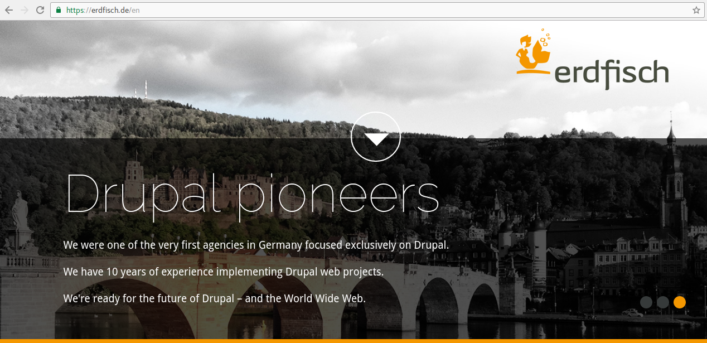
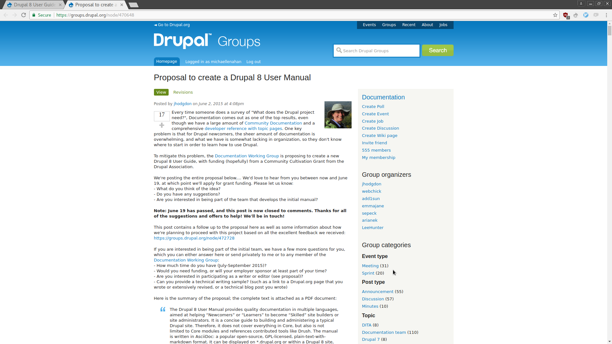

Drupal 8 User Guide
Let's start a German Translation
Michael Lenahan
michaellenahan on drupal.org and github
@mcaleaa on twitter 
drupal-8-user-guide-translation
What is the Drupal 8 User Guide?
June 2015: Proposal to create a D8 User Manual
Motivation
Quality documentation in multiple languages ... that would help a “Newcomer” or “Learner” persona make the transition to “Skilled”.
Drupal project page: https://www.drupal.org/project/user_guide


Free and open-source, just like Drupal is
Available in pdf, mobi, ebook format
Organized and comprehensive
Version controlled using git
Curated and kept up-to-date by the Drupal community
Anyone can contribute
All contributions will get credited
Translations
So how do we get a German translation started?
https://www.drupal.org/docs/user_guide_guidelines/pm-guide.html#pm-guide-translating
Each language the User Guide will be translated into will need a team, which should normally be formed from the existing translation team for the software. As a prerequisite, the translation team should have already translated a large portion of the terms in the software user interface into their language.
https://www.drupal.org/node/2871836
How to get a translation group started?
We would normally only advise setting up a translation team for the User Guide once the current version of Drupal 8 (at this time, 8.3.x) has a nearly 100% translation. The main reason is that the User Guide mentions a lot of text that is in the Drupal user interface, so that text needs translation before you start translating the User Guide.
Three steps to heaven
Step 1: Get to 100% German Drupal User Interface
Join drupal.slack.com/messages/localize-german (I can invite you if you need)
Go to Vienna on Wednesday 10 May or join the sprint remotely
Let's have translation sprints at *all* future German-speaking Drupal events
Step 2: Form a team to translate the User Guide
https://www.drupal.org/docs/user_guide_guidelines/pm-guide.html#pm-guide-translating
Then, the team should choose a manager or managers for the User Guide translation project, and form a group specifically targeted at translating the User Guide.